After reaching the center, we had to wait for the support car to bring us a replacement engine for our broken car. We used this time to explore the area south of Rig-e Jenn and finding a way from Rig-e Jenn to the deserted village of Baba Khaled and Ashin.
Here are some photos of this second phase of our trip:
If you look at the satellite image of Rig-e Jenn, you'll clearly distinguish two different terrains there. One in the north is the typical area with long sand dunes and vast salty plains. The other to the south (what I call the tail of Rig-e Jenn) is full of low sandy hills and much vegetation. We saw many tracks of animals in this area. I saw a sand fox (Vulpes rueppellii), tracks of hares and sand cats (Felis margarita) and many rodents. |
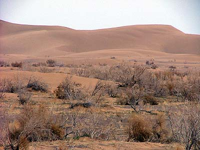 |
| 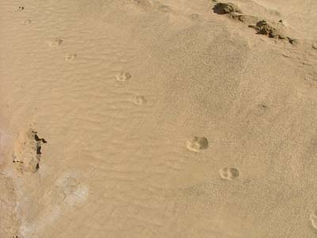 | A cat track, probably of a sand cat (Felis margarita) |
The strangest thing we saw in this trip: a wolf track in the middle of Rig-e Jenn. The area was near the point 718 in the image. We never expected to see a mamal track in this place which has no water in a radius of almost 60 kilometers. |
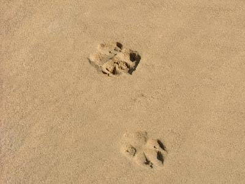 |
| 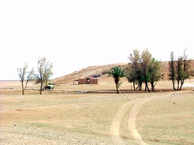 | Baba Khaled. Like Ashin, this is now a deserted place. Will this small oasis be revived someday? |
Mainstreet Ashin. In the back the old stone citadel which used to protect caravans from desert thives. The small mud houses belong to people from Anarak, who come to this place once in a while to spend their holidays or poach the game in the area. |
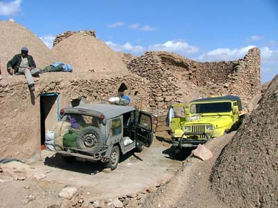 |
|
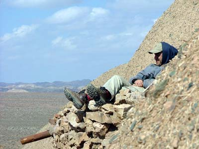 |
Waiting for the support team on a rooftop in Ashin. |
Unimog to the rescue. Reza Ebrahimian took an M151 engine with him and came to our help from Tehran with this Unimog. |
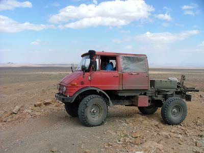 |
|
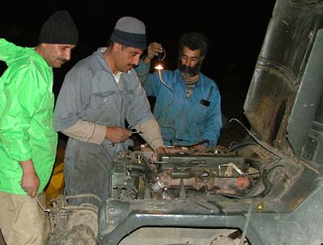 |
Replacing the broken engine. Davoud Fathali, Hamid Boreiri and Reza Ebrahimian at work. |
A broken piston rod knocked out a neat piece of the engine block. |
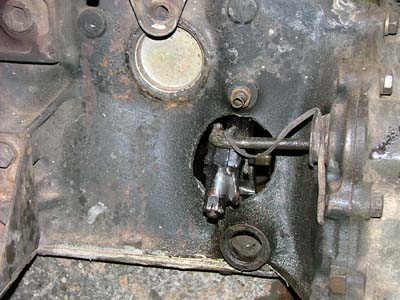 |
|
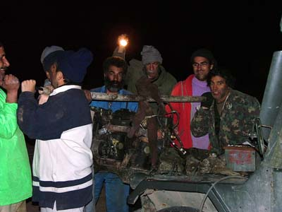 |
Lifting the broken engine, using human musscle. |
Leaving the area for the paved roads and crowded cities. |
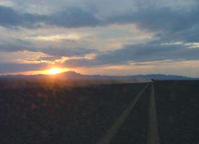 |
Check Hamid Boreiri's site for more pictures of this trip.
{kind=link}